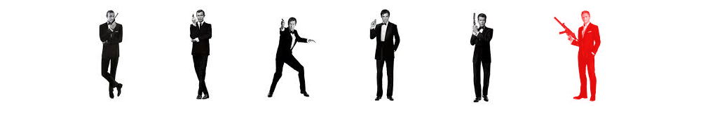

Barbara Broccoli
John Logan
Neal Purvis
Robert Wade
Jez Butterworth
Columbia Pictures
A posthumous message from the previous M leads Bond to carry out an unauthorised mission in Mexico City on the Day of the Dead, where he stops a terrorist bombing plot. Bond confronts Marco Sciarra, the terrorist leader and takes his ring, which is emblazoned with a stylised octopus. When he returns to London, Bond is suspended from field duty by the new M. M is in the midst of a power struggle with Max Denbigh, whom Bond dubs "C", the head of a privately backed agency called the Joint Intelligence Service. C campaigns for Britain to join the global surveillance and intelligence initiative "Nine Eyes", and uses his influence to close down the '00' field agent section, which he believes is outdated.
Bond disobeys M's orders and travels to Rome to attend Sciarra's funeral. He seduces Sciarra's widow, Lucia, who tells him Marco belonged to an organisation of businessmen with criminal and terrorist connections. Bond uses Sciarra's ring to infiltrate a meeting to select Sciarra's replacement, where he identifies the leader, Franz Oberhauser. After hearing Oberhauser give the order for the "Pale King" to be assassinated, Bond is pursued across the city by the organisation's assassin, Mr. Hinx. Moneypenny informs Bond that the Pale King is Mr. White, a former member of the organisation's subsidiary Quantum who had fallen afoul of Oberhauser. Bond asks her to investigate Oberhauser, who was presumed dead years earlier.
Bond locates White in Altaussee, Austria, where he learns that White is dying of thallium poisoning. He tells Bond to find and protect his daughter, Dr. Madeline Swann, who will take him to L'Américain; this will help him find Oberhauser. White commits suicide. Bond approaches Swann, and after rescuing her from Hinx, the two meet Q. Q links Oberhauser to Bond's previous missions, identifying Le Chiffre, Dominic Greene and Raoul Silva as agents of the same organisation, which Swann identifies as Spectre.
Swann takes Bond to L'Américain, a hotel in Tangier, and they discover that White left evidence directing them to Oberhauser's base at a crater in the Sahara. Taking a train to a remote station, Bond and Swann encounter Hinx, who gets ejected from the train in the ensuing struggle, and are escorted to Oberhauser's base. Oberhauser reveals that Spectre has funded the Joint Intelligence Service while staging terrorist attacks around the world, creating a need for the Nine Eyes programme. In return, C will give Spectre unlimited access to intelligence gathered by Nine Eyes, allowing them to anticipate and counter-act investigations into their operations. Bond is tortured as Oberhauser discusses their shared history: after the younger Bond was orphaned, Oberhauser's father, Hannes, became his temporary guardian. Believing that Bond supplanted his role as son, Oberhauser killed his father, staged his own death, adopted the name Ernst Stavro Blofeld and went on to form Spectre and target Bond. Bond and Swann overpower Blofeld and escape, destroying the base in an explosion and leaving Blofeld to die.
As the Moroccan facility was one node in a wider network, Bond and Swann return to London where they meet M, Bill Tanner, Q, and Moneypenny with the intention of arresting C and stopping Nine Eyes from being activated. Swann and Bond are abducted separately, while the rest of the group proceed with the plan. After Q succeeds in preventing the Nine Eyes from going online, a struggle between M and C ends with C falling to his death. Bond is taken to the ruins of the old MI6 building, scheduled for demolition after Silva's bombing. A disfigured Blofeld tells Bond that he must escape before explosives are detonated or die trying to save Swann. Bond finds Swann and they escape by boat as the building collapses. Bond shoots down Blofeld's helicopter, which crashes onto Westminster Bridge. As Blofeld crawls from the wreckage, Bond confronts him but leaves him to be arrested by M, before leaving the bridge with Swann.
The main cast was revealed in December 2014 at the 007 Stage at Pinewood Studios. Daniel Craig returned for his fourth appearance as James Bond, while Ralph Fiennes, Naomie Harris and Ben Whishaw reprised their roles as M, Eve Moneypenny and Q respectively, having been established in Skyfall. Rory Kinnear also reprised his role as Bill Tanner in his third appearance in the series.
Christoph Waltz was cast in the role of Franz Oberhauser, though he refused to comment on the nature of the part. It was later revealed with the film's release that he is Ernst Stavro Blofeld. Waltz got interested in the film for dealing with technology-assisted mass surveillance, "speaking about relevant social issues in a way that few Bonds have done before", and denied rumours that the role was written specially for him, but added that "when I came on board, the role grew, evolved, and mutated."
Dave Bautista was cast as Mr. Hinx after producers sought an actor with a background in contact sports. The character only has one line in the entire film, "Shit". Sam Mendes thought the silent nature would drive Bautista away, but the lifelong Bond fan expressed interest in reviving the quiet henchmen archetype of characters such as Jaws. Bautista's performance was inspired mostly by Oddjob from Goldfinger, and said not talking created an acting challenge, "trying to find this way where I am actually going to have speak without speaking." After casting Bérénice Lim Marlohe, a relative newcomer, as Sévérine in Skyfall, Mendes sought out a more experienced actor for the role of Madeleine Swann, ultimately casting Léa Seydoux in the role. Monica Bellucci joined the cast as Lucia Sciarra, becoming, at the age of fifty, the oldest actress to be cast as a Bond girl. In a separate interview with Danish website Euroman, Jesper Christensen revealed he would be reprising his role as Mr. White from Casino Royale and Quantum of Solace. Christensen's character was reportedly killed off in a scene intended to be used as an epilogue to Quantum of Solace, before it was removed from the final cut of the film, enabling his return in Spectre.
In addition to the principal cast, Alessandro Cremona was cast as Marco Sciarra, Stephanie Sigman was cast as Estrella and Detlef Bothe was cast as a villain for scenes shot in Austria. In February 2015 over fifteen hundred extras were hired for the pre-title sequence set in Mexico, though they were duplicated in the film, giving the effect of around ten thousand extras.
Mendes revealed that production would begin on 8 December 2014 at Pinewood Studios, with filming taking seven months. Mendes also confirmed several filming locations, including London, Mexico City and Rome. Van Hoytema shot the film on Kodak 35 mm film stock, in contrast to Skyfall being filmed on digital cameras. Early filming took place at Pinewood Studios and around London, with scenes variously featuring Craig and Harris at Bond's flat, and Craig and Kinnear travelling down the River Thames.
Filming started in Austria in December 2014, with production taking in the area around Sölden - including the Ötztal Glacier Road, Rettenbach glacier and the adjacent ski resort and cable car station - and Obertilliach and Lake Altaussee, before concluding in February 2015. Scenes filmed in Austria centred on the Ice Q Restaurant, standing in for the fictional Hoffler Klinik, a private medical clinic in the Austrian Alps. Filming included an action scene featuring a Land Rover Defender Bigfoot and a Range Rover Sport. Various airplane models were used in filming, from a life-sized plane with detachable wings to film the crash in the woods, to plane fuselages either built atop snowmobiles or shot from nitrogen cannons. Production was temporarily halted first by an injury to Craig, who sprained his knee whilst shooting a fight scene, and later by an accident involving a filming vehicle that saw three crew members injured, at least one of them seriously.
Filming temporarily returned to England to shoot scenes at Blenheim Palace in Oxfordshire, which stood in for a location in Rome, before moving on to the city itself for a five-week shoot across the city, with locations including the Ponte Sisto bridge and the Roman Forum. The production faced opposition from a variety of special interest groups and city authorities, who were concerned about the potential for damage to historical sites around the city, and problems with graffiti and rubbish appearing in the film. Special effects supervisor Chris Corbould stated the scenes had to be extensively planned prior to filming specially to avoid any mishaps, going to the point of building protection above steps where cars would drive. A car chase scene set along the banks of the Tiber River and through the streets of Rome featured an Aston Martin DB10 and a Jaguar C-X75. The C-X75s used for filming were developed by the engineering division of Formula One racing team Williams, who built the original C-X75 prototype for Jaguar. Remote driving pods were built above the cars so the vehicles could be driven while the cameras focused on Craig and Bautista in the steering wheel. According to chief stunt co-ordinator Gary Powell, filming the chase had the "risk of skidding into the Vatican", and led to "a record for smashing up cars in Spectre - seven Aston Martins in all," with the film's car expenses estimated at £24 million ($48 million).
With filming completed in Rome, production moved to Mexico City in late March to shoot the film's opening sequence, with scenes to include the Day of the Dead festival filmed in and around the Zócalo and the Centro Histórico district. At the time, no such Day of the Dead parade like the one from the film took place in Mexico City; in 2016, due to the interest raised by Spectre and the government's desire to promote the pre-Hispanic Mexican culture, the federal and local authorities decided to organize an actual "Día de los Muertos" parade through Paseo de la Reforma and Centro Historico on 29 October 2016, which was attended by 250,000 people. The film opens with a long take that joins six shots seamlessly, and was one of the few scenes that required previsualization. Through extensive planning, filming did not require motion control cameras. The scene joints were done in post-production through re-timing and re-projections, which even matched Mexico locations with interiors filmed at Pinewood.
The planned scenes required the city square to be closed for filming a sequence involving a fight aboard a Messerschmitt-Bölkow-Blohm Bo 105 helicopter flown by stunt pilot Chuck Aaron, which called for modifications to be made to several buildings to prevent damage. This particular scene in Mexico required 1,500 extras, 10 giant skeletons and 250,000 paper flowers. Reports in the Mexican media added that the film's second unit would move to Palenque in the state of Chiapas, to film aerial manoeuvres considered too dangerous to shoot in an urban area. These were pasted over a computer-generated square and crowd below the helicopter, with motion capture doubles fighting inside. Mendes and the effects team felt that this approach "would get believable composition and movement" compared to adding a digital helicopter above the Mexico City location. Following filming in Mexico, and during a scheduled break, Craig was flown to New York to undergo minor surgery to fix his knee injury. It was reported that filming was not affected and he had returned to filming at Pinewood Studios as planned on 22 April. Nonetheless, some parts of the Mexico scene were done with stunt doubles, whose faces were digitally replaced with Craig's.
A brief shoot at London's City Hall was filmed on 18 April 2015, while Mendes was on location. On 17 May 2015 filming took place on the Thames in London. Stunt scenes involving Craig and Seydoux on a speedboat as well as a low flying helicopter near Westminster Bridge were shot at night, with filming temporarily closing both Westminster and Lambeth Bridges. Scenes were also shot on the river near MI6's headquarters at Vauxhall Cross. The crew returned to the river less than a week later to film scenes solely set on Westminster Bridge. The London Fire Brigade was on set to simulate rain as well as monitor smoke used for filming. Craig, Seydoux and Waltz, as well as Harris and Fiennes, were seen being filmed. Prior to this, scenes involving Fiennes were shot at Rules Restaurant in Covent Garden. Filming then took place in Trafalgar Square. In early June, the crew, as well as Craig, Seydoux and Waltz, returned to the Thames for a final time to continue filming scenes previously shot on the river. Blofeld's helicopter crash was done with two full sized helicopter shells, which were rigged with steelwork and an overhead track. Computer-generated rotor blades and scenery damage were added in post-production. The MI6 building, which in the film is vacated and scheduled for demolition following the terrorist attack from Skyfall, was replaced in the production plates for a digital reconstruction. When the building is detonated, it is a combination of both a miniature and a breakaway version of the digital building.
After wrapping up in England, production travelled to Morocco in June, with filming taking place in Oujda, Tangier and Erfoud, after preliminary work was completed by the production's second unit. The headquarters of Spectre in Morocco was located in Gara Medouar which is a 'crater' caused by erosion and of neither volcanic nor impact origin. An explosion filmed in Morocco holds a Guinness World Record for the "Largest film stunt explosion" in cinematic history, involving 8,140 litres of kerosene and 24 charges each with a kilogram of high explosives. Principal photography concluded on 5 July 2015. A wrap-up party for Spectre was held in commemoration before entering post-production. Filming took 128 days.
Whilst filming in Mexico City, speculation in the media claimed that the script had been altered to accommodate the demands of Mexican authorities—reportedly influencing details of the scene and characters, casting choices, and modifying the script to portray the country in a "positive light"—to secure tax concessions and financial support worth up to $20 million for the film. This was denied by producer Michael G. Wilson, who stated that the scene had always been intended to be shot in Mexico as production had been attracted to the imagery of the Day of the Dead, and that the script had been developed from there. Production of Skyfall had previously faced similar problems while attempting to secure permits to shoot the film's pre-title sequence in India before moving to Istanbul.
Five companies did the visual effects—Industrial Light & Magic, Double Negative, Moving Picture Company, Cinesite and Peerless—under the supervision of Steve Begg. The computer-generated effects included set extensions, digital touches on the vehicles, and crumbling buildings. A sixth one, Framestore, handled the title sequence, the seventh in the series designed by Daniel Kleinman. It took four months to complete, and centred on an octopus motif reminiscent of the Spectre logo, along with images of love and relationships.
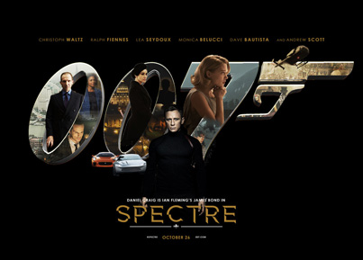
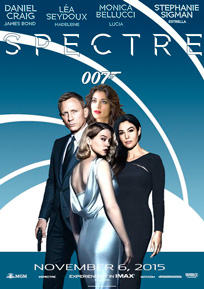
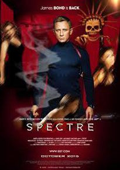
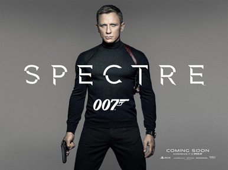
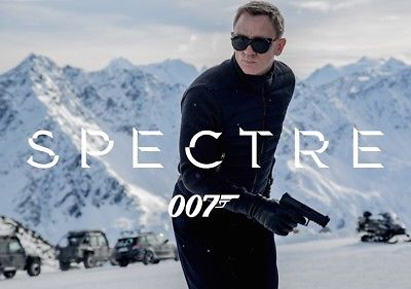
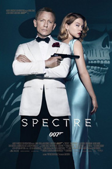
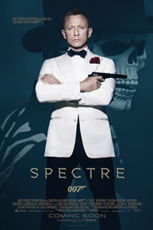
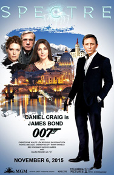
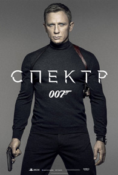
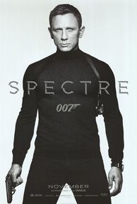
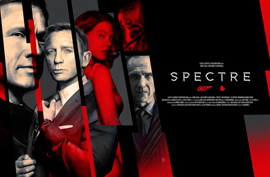